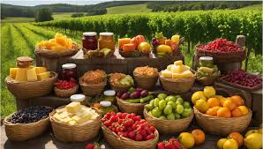
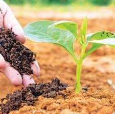
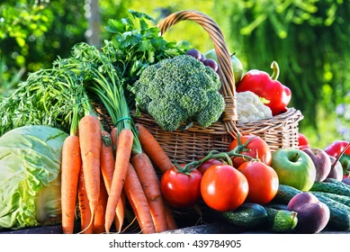

Best Quality Standard

Smart Organic Services

Smart Organic Services

Before we formed MuffinGroup, our “gang of four” worked for an interactive agency, which is where we first met. Like others having an entrepreneurial spirit, we took stock of ourselves, and decided to strike out on our own, as a design and development team. We started by creating a WordPress theme called Doover. It was rejected, but we stuck with it, and it was eventually approved. With that successful venture under our belts, we took the next step; we quit our full-time jobs and started our own company. Doover is still up and running. We’ve sold more than 2,000 copies, and it is one of over a dozen WordPress themes making up our product line. In fact, Doover has outsold most of our other WordPress themes, but there is one very big exception, which leads people to believe that we are a very large company. In terms of staffing, we are a very small company. In terms of sales, we are huge; at least in terms of WordPress theme sales. That is largely because of a product of ours that recently exceeded 25,000 in sales – Be Theme.